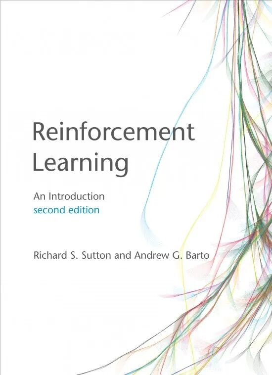
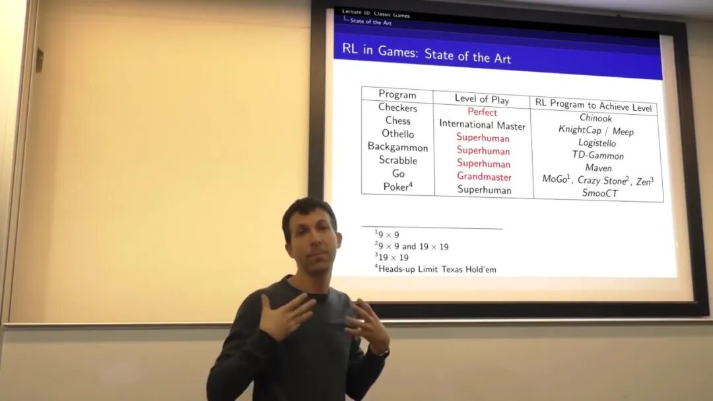
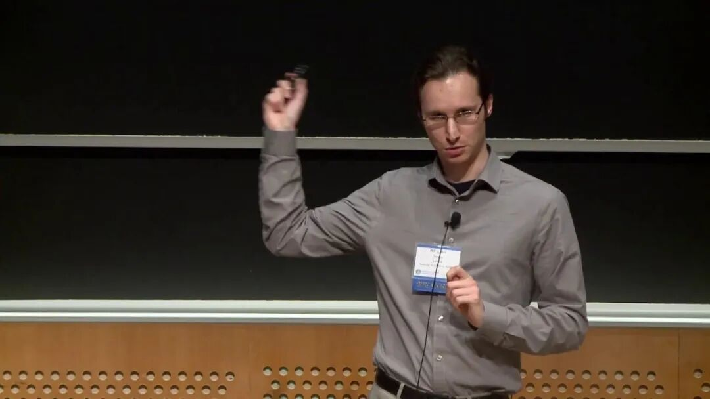

--------点击蓝字关注我--------
微信号：gaoxiaomao88
--------点击蓝字关注我--------
微信号：gaoxiaomao88
最近我在一亩三分地上发了个帖子，介绍了一些Reinforcement Learning（强化学习）的学习经验和相关资料，感觉大家还蛮喜欢的，就作为这周的文章发出来吧~~
话说这周欧洲的疫情更加严重了，从欧洲回国的机票涨了好多，听说不少人都想回国避一下风头。不知道美国这里会不会到那么严重，有没有人最近打算回国避一避呢？
以下是帖子的内容：
本人在Unity做了两年的Machine Learning Engineer，主要的方向就是RL在游戏AI中的应用。过去的两年在RL学习的路上摸索了很久，也走了一些弯路，想来版上分享一下，能够帮到大家的话就再好不过了。
1.
RL领域的话最有名的教科书就是下面这本，现在出到第二版了。第二版相比第一版更新了很多内容，也变厚了不少，特别是对于近年来效果比较好的Policy Gradient的内容谈得多了很多。
Reinforcement Learning: An Introduction 作者：Richard Sutton and Andrew Barto （第二版）
https://www.amazon.com/Reinforce ... 83970523&sr=8-2
不过我个人不太推荐直接一开始就啃这本书，我觉得有些累，类似于零基础直接啃花书。

2.
OpenAI的Spinning Up教程
https://spinningup.openai.com/en/latest/index.html
这个教程我个人比较推荐，里面快速地把基础知识中最重要的部分过了一遍，然后迅速跳到现在业界用得最多的Actor Critic， PPO，SAC等算法。不仅如此，他们还会给出代码，实践和对应的练习，很适合大家通过代码学习，快速提高。
3.
David Silver的UCL的课
David Silver是RL业界的绝对大佬了，他教的课也是很多人非常推崇的。这门课用的教材就是上面Sutton的那本，不过他的课上跳过了书上很多内容，所以如果要把每一节课消化还是要去细细地翻书。
我觉得这门课结合Sutton的教材是打好RL基础的不二选择。
https://www.youtube.com/watch?v= ... OYHWgPebj2MfCFzFObQ

4.
Sergey Levine 的UC Berkeley的课
Sergey也算是RL业界的顶尖大佬了，最近一次的ICLR他似乎一口气挂了10+的paper，产量惊人。他的课相对于David Silver的课来说难很多，同时也贴近业界很多，比如Inverse RL，TRPO的原理之类的东西，David Silver的课似乎没有涉及，但是这些对于理解现在业界广泛使用的算法具有重要作用。我的推荐是上完David Silver的课再上这门课。
https://www.youtube.com/playlist ... JpGazJ9VSj9CFMkb79A

5.
Stanford的CS234， 老师是Emma Brunskill
这位是专门做Batch RL的，在一些RL用于Ads， Recommendation等领域有非常好的应用。她会在黑板上推公式，感觉讲得还是很清楚的。不过由于我没有听多少她的课，对于难度不太好评价。
http://web.stanford.edu/class/cs234/index.html
6.
台湾李宏毅的RL相关视频
李老师特别擅长把复杂的问题用类比的方式讲清楚，对于快速理解问题很有帮助。他的课上不太有推公式，更多的是用比喻来把概念讲清楚。这样子有好处，就是易于理解，但是坏处就是由于没有公式的理解，当自己看文献的时候，看到对应的公式就蒙了。
总体来说他的视频我觉得适合那种想要快速搞清楚RL的整个领域的现状，不求深入理解的人看，对于理解RL主要的几个业界常用的算法的大体原理很有帮助。
https://www.bilibili.com/video/a ... 4814651069494196110
7.
总结
总体来说我觉得RL这个领域水还是很深的。在学术界的发展非常快，记得今年看到一个workshop上有个Deepmind的Researcher说，in RL nothing is done， 有好多非常基础和重要的事情还需要人去完成。举个最简单的例子，在Supervised Learning里面我们Train和Test的data肯定要分开的，但是在RL里面大家从来都是不分Train和Test的，最近一两年大家才开始去说这个事情。可以说RL领域还有很长的路要走。
在工业界RL的应用坑还非常多，但是也有一些不错的进展了，尤其在Ads和推荐方向。Facebook的ReAgent（以前叫Horizon）项目现在在Facebook内部好多组都在尝试使用，听说效果很不错。阿里之前也出了一个小册子，讲他们是如何用RL改进他们的商品推荐的。
至于职位我觉得现在要求RL技能的岗位还非常少，大多数都是Research Scientist之类的岗位，所以如果没有相关领域的PhD，还是不要在这一块儿投入太多时间。
大致就是这样，欢迎大家交流谈谈你们工作中碰到的RL相关的内容，或者说说你是为什么想要学习RL~~
答：RL目前在工业界有些什么应用嘛？
RL在业界的落地我目前所知的有以下这一些
1. OpenAI， Deepmind， Google Brain， FAIR这些高大上研究所做的偏应用的demo。OpenAI Five， AlphaGo等等都算这一类。当然他们这些机构的主要目标还是发paper，做出state of the art result。
2. Ads，Recommendation领域的应用，很多大厂（Google， Facebook， Twitter）的收入都非常依赖Ads，因此在这一块儿的一点点提升可以有很大的impact。这里主要用的是Batch RL相关的技术，跟Robotics， Gaming里面用的RL有点不一样，尤其是其Evaluation的方式。在这一块儿最有名的就是Facebook开源了的ReAgent项目。
https://github.com/facebookresearch/ReAgent
3. 游戏相关的应用。因为我自己做这一块儿所以对这一块儿比较关注。我们组做的开源项目Unity ML-Agents我觉得是这个领域的标杆之一：https://github.com/Unity-Technologies/ml-agents，有很多游戏工作室已经开始尝试用我们这个项目，主要的目的是把RL技术用于他们游戏中来训练Bot。
4. Self-Driving相关
Self-Driving目前业界主要还是在用Rule based的方法来做planning/behavior。主要的原因是这样的方式可解释，风险可控。RL的算法还是不稳定，而且这个不稳定是模型的本质决定的，短期内不太有希望可以解决。不过还是有很多Self Driving公司的偏R&D的组开始在尝试RL的方法，具体效果怎么样不太清楚，如果有同学做这个的希望可以出来讲讲，非常好奇。
5. Robotics相关
我知道Boston Dynamics似乎是完全没有用RL的，还是在用Control的那些算法。其它有名的Robotics公司不太清楚，可能大疆在做？
6. 其它可以创建模拟环境的优化场景
这个我只是有所耳闻。比如你要解决一个供应链的问题，决定什么时候什么东西要生产多少，什么时候运到哪儿。解决方法之一是可以针对这个问题做一个虚拟环境，然后用RL的算法去优化每一个环节。
这个也可以推广到别的场景，或者说几乎所有的可以转化成模拟环境的问题都可以用RL去解决。
总体来说， 1肯定是要相关领域的PhD+一些工程师去做， 2跟钱最相关，我比较看好。3，4，5，6我觉得刚刚起步，什么时候成熟还未可知，但是我觉得至少3大方向还是对的，是可以解决一些实际的问题的。